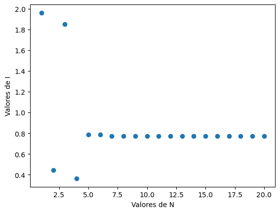

Calcular la integral \(I\)
Como se habló en la introducción, la integral de interés es:
Primero declaramos las funciones para calcular los valores \(x_k\) y \(w_k\) de los polinomios de Legendre y sus valores escalados, como visto en Explicación. Así mismo defínimos la función a integrar.
from scipy.special import legendre
import matplotlib.pyplot as plt
import numpy as np
def gaussxw(N): #calcular x y w
x, w = np.polynomial.legendre.leggauss(N)
return x, w
def gaussxwab(a, b, x, w): #escalar x y w al intervalo [a,b]
return 0.5 * (b - a) * x + 0.5 * (b + a), 0.5 * (b - a) * w
def integrando(x): #funcion a integrar
return np.sin(x**2)
Ahora, en vez de solo integrar una vez para un valor de \(N\) concreto, declaramos una funcion que haga el proceso para poder replicar varias iteraciones y graficar el valor de \(I\) para varios \(N\).
def integral(a, b, funcion, N): #a:inicio, b:final, N: cantidad de segmentos
x_0, w_0 = gaussxw(N)
x_N, w_N = gaussxwab(a,b,x_0,w_0)
return np.sum(w_N*funcion(x_N)) #método de cuadratura gaussiana
print(f"Valor de la integral: {integral(0,np.pi,integrando,20)}")
#Valor de la integral: 0.7726517126900648
Ahora, haremos un gráfico que muestre como cambia el valor de la integral según el número de segmentos. Para esto, haremos un numpy arange de valores de \(N\) del 1 al 20. Luego podemos usar np.vectorize. Éste comando recibe una función y admite que entre los argumentos de la función haya arrays y nos devuelve un array con los resultados de la función. Usaremos éste comando para recibir un valor de \(I\) por cada \(N\) para poder graficarlos.
valores_N=np.arange(1,21,1,int)
valores_I=np.vectorize(integral)(0,np.pi,integrando, valores_N)
#Hacemos la gráfica I contra N
plt.plot(valores_N, valores_I, 'o')
plt.xlabel("Valores de N")
plt.ylabel("Valores de I")
plt.show()
